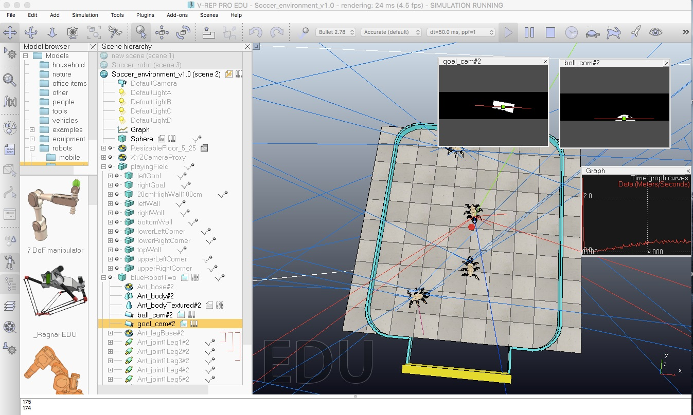
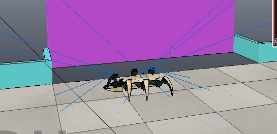
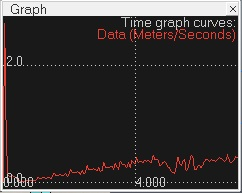

Soccer Playing Robot
Responsible: Peter Friedl (s160769)
Abstract
Two robots were created to play a simulated football match in vrep. One robot plays keeper and the other plays as striker. Below you can see our robots winning their first game 2-0.
Hardware Design
We chose to use the premade ant robot since it was both faster and larger than the hexpod. The extra length is especially useful in goal since it allows the robot to cover more of the goal at one time. The ant also had the benefit of using its pincers to control the ball when "dribbling." The size of the ant was useful during collisions with robots from the other team as the hexapod didn't seem to be able to move the ant at any appreciable speed.
Each robot has vision sensors that selectively filters colors depending on what that camera should see. For example, the camera that tracks the ball only sees red and the camera tracking the goal only sees the color of the goal. This image is then converted to binary and the center of mass is calculated. This results in an x and y coordinate output for the center of mass of the object in the camera.
In the photo below you can see the binary output of the vision sensors in the top right corner (ball cam on right and goal cam on left). Additionally, you can see the speed output in meters per second in the graph just below the vision sensors. A speed update can be seen in the photo as one of the attackers beats the other attacker to the ball.
Implementation
The keeper first moves to its starting position on the left side of the goal. Then he uses the "stopTheGoals" algorithm to play keeper. This mainly consists of tracking where the ball is in the camera located on the left side of his body. The x-coordinate of the ball is taken from the sensor and is used to check if he is centered in front of the ball. If he isn't centered then he adjusts to make himself between the ball and the goal. He also moves further away from the goal at the center and closer to the goal near the edges of the goal in an attempt to protect the near post. Another advantage of this implemenation was that the keeper pushed back against robots who tried to push him into the goal. This is especially useful if teams tried to win by pushing our robots into the void.
The striker tracks the ball using his vision sensors and moves towards it. The x-coordinate of the ball is subtracted from 0.5 and inputted directly into his orientation. This allows him to always move efficiently towards the ball. His speed was particularly useful as it generally allowed him to win the ball at kickoff, which meant we were in control of the game.
Test and Performance
In order to double down on the speed advantage we did tests to adjust the magnitude of the step, height of the step, and overall walking velocity. In the end this resulted in a robot that was substantially faster than the hexapod. We even had a nice graph that ouput the speed of the robot so we could get quantitative data rather than just qualitative data. We found that a change of 0.2 to the step size parameter resulted in a 10% increase in speed. Ultimately these tests showed the importance of overall step mechancis rather than just speed. A qualitative analysis showed how if only speed was increased with no regard to step size or magnitude then the ant tended to tangle his own legs and not move effeciently.
Conclusion
Our first game was won 2-0. I think our main advantage was using the ant, which is faster and therefore allowed us to get to the ball before the other team. Once we had the ball on their half we were more or less in control since its quite difficult to collect the ball and then turn towards the opposing goal.
We won our second game 1-0, which allowed us to continue on to the final. In the final we won 1-0, because we scored one goal and then the robots on the other team were blocked from playing by our robots. I think our success was again due to the size and low center of gravity that is characteristic of the ant robot. Part of the other team's strategy was to flip other robots with an arm that they had attached and I believe our ant being resistant to that was important to winning.
Looking back, it would have been quite helpful to have a computer that ran the simulation more quickly than 4 fps. Our walking mechanics were not what we wanted when the game was played at full speed, even though they looked okay during our test runs.